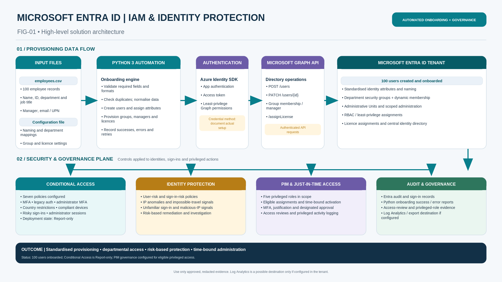
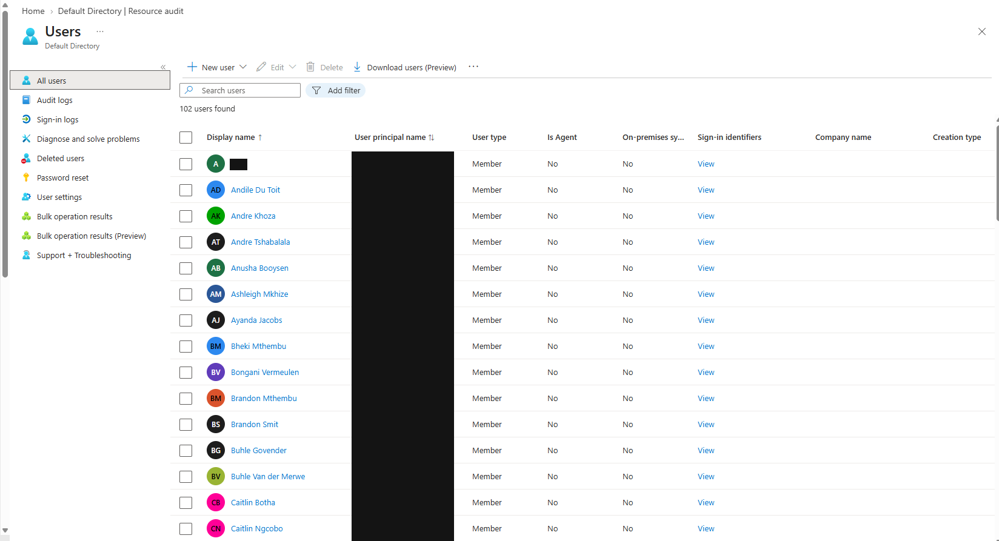
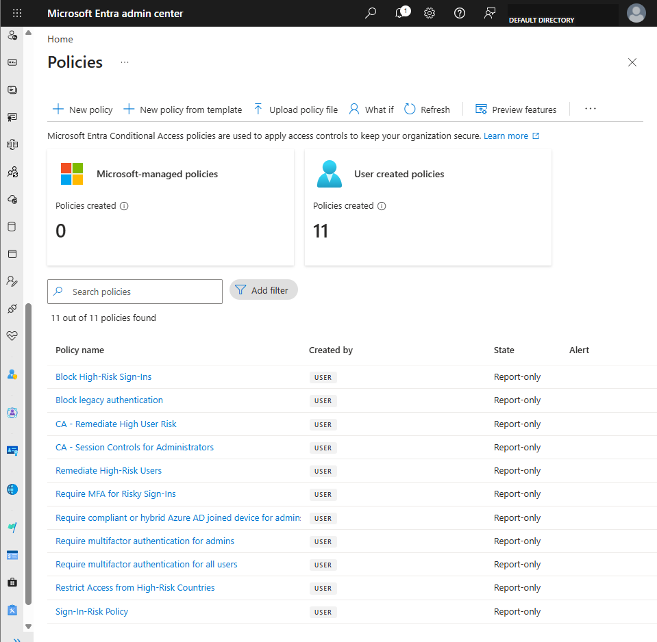

Cloud Security Case Study
Microsoft Entra ID: Automated Onboarding & Identity Protection
100 new starters. Five departments. Every account created by hand. I replaced it with code, then built the identity controls around it.
100/100users provisioned
95manager links set
7Conditional Access policies
5privileged roles under PIM
SSituation
A simulated financial-services organisation onboarded staff manually across five departments. It was slow and inconsistent, and produced duplicate records and incorrect permissions. MFA wasn't applied consistently, admins had permanent standing access, and the audit trail was thin.
TTask
Automate onboarding into Microsoft Entra ID and design identity controls aligned with Zero Trust: least privilege, verify explicitly, assume breach.
AAction
- Python provisioning engine: CSV → Pydantic validation → async Microsoft Graph SDK → user creation, then a second pass to link managers. Secrets come from environment variables, and each failed row is logged without stopping the run
- Access model: dynamic department groups, one Administrative Unit per department, and job-based scoped RBAC
- 7 Conditional Access policies: MFA for all users, block legacy auth, MFA for admins, high-risk countries blocked, compliant devices for admins, MFA on risky sign-ins, and 4-hour admin sessions. All deployed in report-only first to avoid lockouts
- Identity Protection: user-risk and sign-in-risk policies
- PIM / just-in-time: 5 privileged roles eligible-only, time-bound, with MFA, justification and approval, plus access reviews every 2 weeks

RResult


Bug found in review: the HR and IT dynamic rules matched
"HR" and "IT", but the source data used "Human Resources" and "Information Technology", so those groups missed all 33 users. Fix: align the rules with the data, then confirm membership. Lesson: test rules against real attribute values before building access on them.